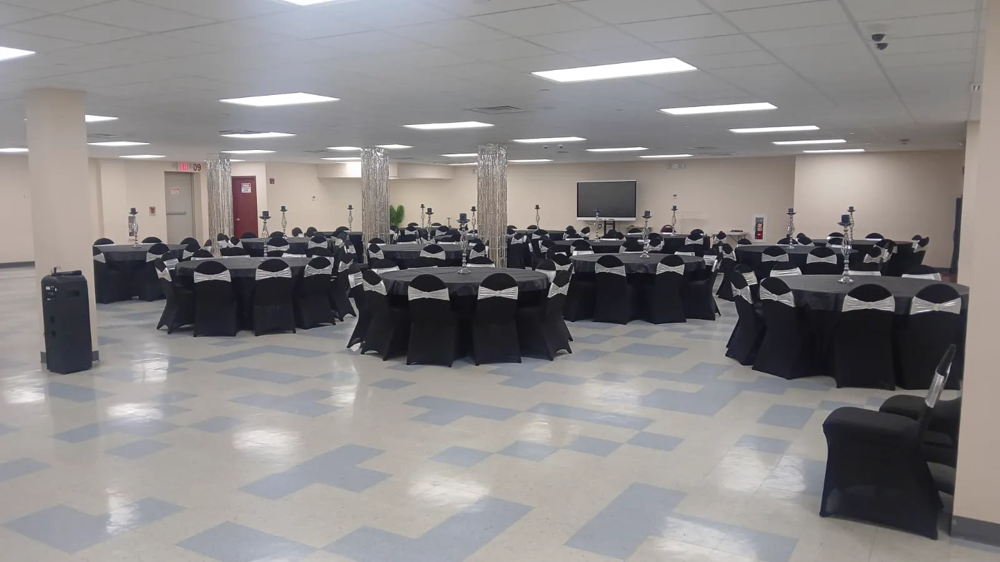
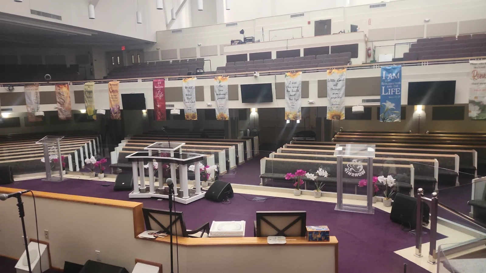

En Manhattan, la limpieza la gobierna el edificio, no el inquilino. Las ventanas del montacargas, los requisitos de certificado de seguro, las reglas sindicales y las listas de acceso nocturno determinan lo que realmente se puede hacer; por eso la primera conversación suele ser con la administración del edificio, no sobre trapeadores.
De trabajos de AJB en nuestro portafolio.


Propiedades comerciales en y alrededor de Midtown, Financial District, SoHo, Chelsea, Flatiron District. Si su edificio queda cerca, pregúntenos.
Códigos postales de esta zona: 10001, 10016, 10017, 10036
Sí. AJB Cleaning Services, LLC tiene su base en 80 Lamberton Rd, Windsor, CT, a unas 105 millas en línea recta de New York. New York queda fuera de nuestra zona principal, así que confirmamos la disponibilidad de cuadrillas para su dirección antes de cotizar.
En New York cotizamos sobre todo oficinas y recepciones, condominios de lujo y mudanzas y consultorios dentales. Si su edificio es de otro tipo, cuéntenos y le decimos si podemos atenderlo.
No publicamos una tarifa fija, porque el precio depende de los pies cuadrados, la frecuencia y el alcance. Llámenos o envíe el formulario de esta página: agendamos una visita presencial o virtual y le enviamos una propuesta.
Cuéntenos sobre su edificio. Agendamos una visita presencial o virtual y le enviamos una propuesta.
¿Prefiere hablar? +1 860-931-2274
AJB Cleaning Services, LLC tiene su base en Windsor, Connecticut, y cubre Nueva York, Nueva Jersey, Connecticut y Pensilvania (Estados Unidos).